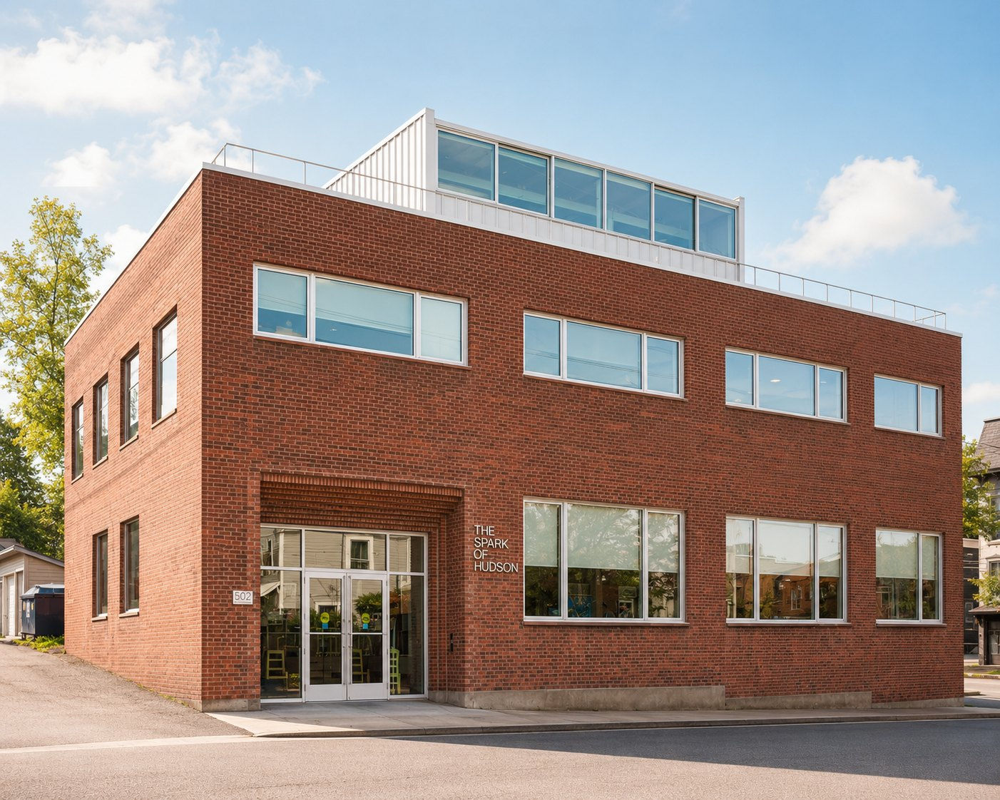

The Eutopia blog
The Spark of Hudson Building Honored by Architizer

Thrilled to announce that the The Spark of Hudson building has received a “Special Mention” from the international 2026 Architizer A+ Awards in the “Small Mixed-Use Commercial” category. It's thanks to architects Joanie Tom and Stephanie Lin, who turned a former tobacco and candy warehouse into a beloved community learning center located in the heart of Hudson, New York.
This award is particularly meaningful as this was Joanie Tom's first project as an independent architect, effectively putting her firm, Glo, into business (working with Stephanie's firm, Present Forms). We love that this project embodies what Eutopia is all about: creating opportunities for those who normally aren't given a shot.
Here's more about The Spark of Hudson building from Architizer:
GLO and Present Forms were engaged to transform an abandoned tobacco warehouse into a headquarters for the Spark of Hudson, a new non-profit community learning hub in Hudson, NY. In addition to making space for an ambitious array of programs, a central concern of this project was making the rather introverted building feel more welcoming. Given the fluid and ever-evolving list of activities that the building would play host to, rather than assign specific programs to each space, the existing ground and second floors were subdivided into spaces of varying scales and technical capabilities. The strategy regarding apertures was guided by the desire to make the ground floor feel open and public-facing, and the second floor more private. To this end, the existing clerestory windows on the ground floor were extended downward, creating more visual connectivity with the surrounding neighborhood, while those existing on the second floor remained untouched. Additionally, on the ground floor, the north–south axis of interior and exterior apertures were aligned to allow for clear views through the building from Cherry Alley to Union St. New windows were also introduced along the northern and southern facades, letting in light and air, and also bringing harmony to previously mute, disordered surfaces.
Other notable features of the project included the creation of a new solarium structure and garden terrace on the previously empty rooftop and the use of bricks salvaged during initial building demolition in the stepped portals framing the main entrance to the building and the picture window on the southern façade.
Designing The Spark of Hudson community learning hub was a learning process for us all, as none of us had ever taken on such a big endeavor. That fits perfectly with The Spark's mission and motto: “learn together.”
Congrats Joanie and Stephanie on this well-deserved mention. The building is stunning!
Warmly,
Gigi